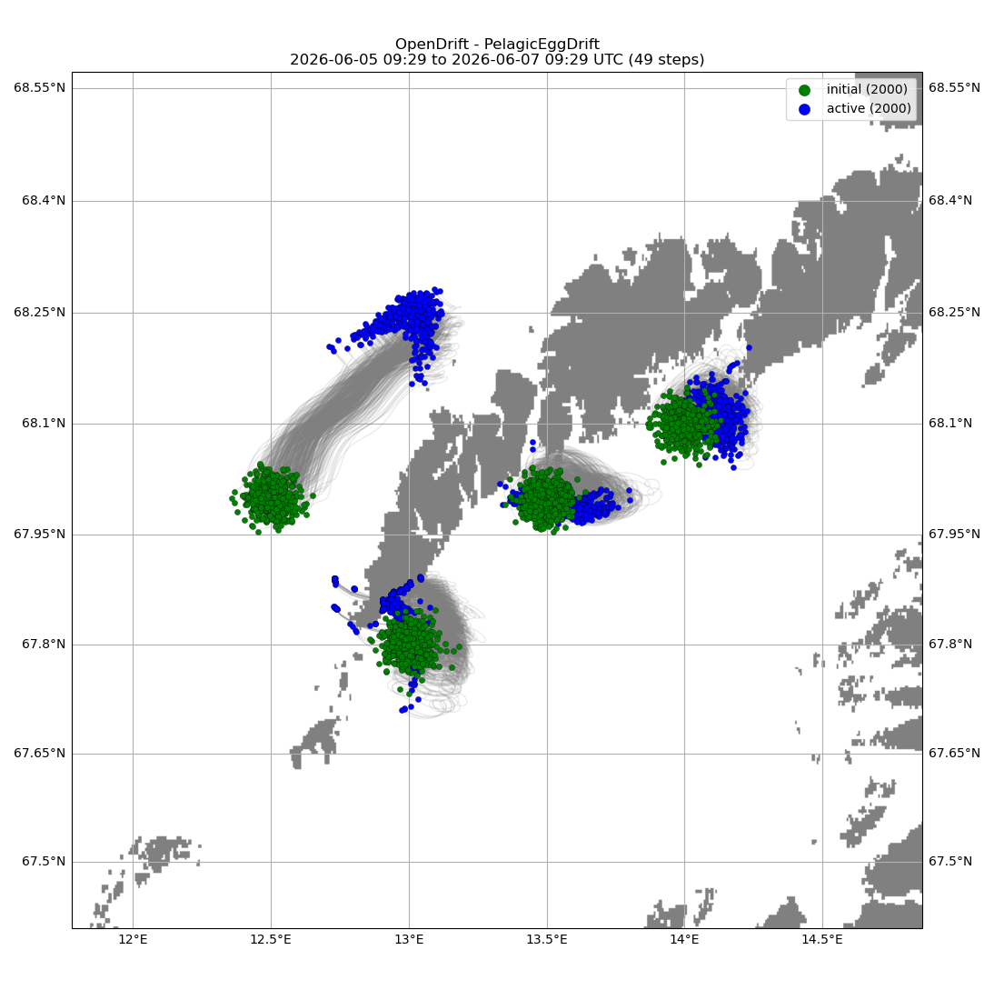
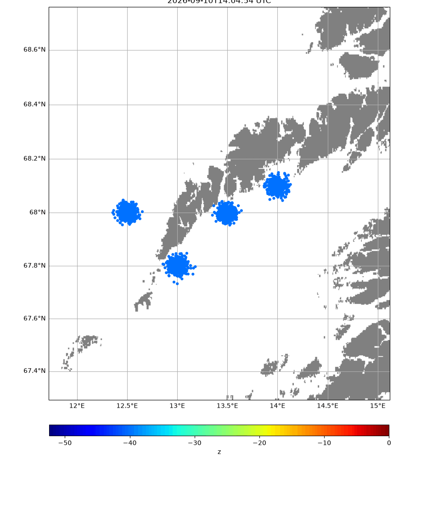
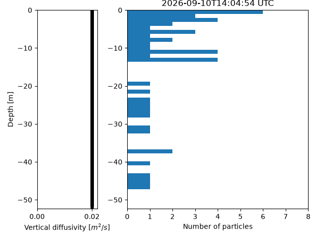

Note
Go to the end to download the full example code.
Cod egg
from opendrift.readers import reader_netCDF_CF_generic
from opendrift.models.pelagicegg import PelagicEggDrift
from datetime import datetime, timedelta
o = PelagicEggDrift(loglevel=20) # Set loglevel to 0 for debug information
# Forcing with Topaz ocean model and MEPS atmospheric model
o.add_readers_from_list([
'https://thredds.met.no/thredds/dodsC/cmems/topaz6/dataset-topaz6-arc-15min-3km-be.ncml',
'https://thredds.met.no/thredds/dodsC/mepslatest/meps_lagged_6_h_latest_2_5km_latest.nc'])
09:29:13 INFO opendrift:569: OpenDriftSimulation initialised (version 1.14.9 / v1.14.9-61-g2d35ef6)
Adjusting some configuration
o.set_config('drift:vertical_mixing', True)
o.set_config('vertical_mixing:diffusivitymodel', 'windspeed_Sundby1983') # windspeed parameterization for eddy diffusivity
Vertical mixing requires fast time step
o.set_config('vertical_mixing:timestep', 60.) # seconds
spawn NEA cod eggs at defined position and time
time = datetime.now()
o.seed_elements(14. , 68.1, z=-40, radius=2000, number=500,
time=time, diameter=0.0014, neutral_buoyancy_salinity=31.25)
o.seed_elements(12.5, 68., z=-40, radius=2000, number=500,
time=time, diameter=0.0014, neutral_buoyancy_salinity=31.25)
o.seed_elements(13.5, 68., z=-40, radius=2000, number=500,
time=time, diameter=0.0014, neutral_buoyancy_salinity=31.25)
o.seed_elements(13., 67.8, z=-40, radius=2000, number=500,
time=time, diameter=0.0014, neutral_buoyancy_salinity=31.25)
09:29:13 INFO opendrift.models.basemodel.environment:203: Adding a global landmask from GSHHG
09:29:17 INFO opendrift.models.basemodel.environment:227: Fallback values will be used for the following variables which have no readers:
09:29:17 INFO opendrift.models.basemodel.environment:230: x_sea_water_velocity: 0.000000
09:29:17 INFO opendrift.models.basemodel.environment:230: y_sea_water_velocity: 0.000000
09:29:17 INFO opendrift.models.basemodel.environment:230: sea_surface_height: 0.000000
09:29:17 INFO opendrift.models.basemodel.environment:230: sea_surface_wave_significant_height: 0.000000
09:29:17 INFO opendrift.models.basemodel.environment:230: sea_ice_area_fraction: 0.000000
09:29:17 INFO opendrift.models.basemodel.environment:230: x_wind: 0.000000
09:29:17 INFO opendrift.models.basemodel.environment:230: y_wind: 0.000000
09:29:17 INFO opendrift.models.basemodel.environment:230: sea_floor_depth_below_sea_level: 100.000000
09:29:17 INFO opendrift.models.basemodel.environment:230: ocean_vertical_diffusivity: 0.020000
09:29:17 INFO opendrift.models.basemodel.environment:230: ocean_mixed_layer_thickness: 50.000000
09:29:17 INFO opendrift.models.basemodel.environment:230: sea_water_temperature: 10.000000
09:29:17 INFO opendrift.models.basemodel.environment:230: sea_water_salinity: 34.000000
09:29:17 INFO opendrift.models.basemodel.environment:230: surface_downward_x_stress: 0.000000
09:29:17 INFO opendrift.models.basemodel.environment:230: surface_downward_y_stress: 0.000000
09:29:17 INFO opendrift.models.basemodel.environment:230: turbulent_kinetic_energy: 0.000000
09:29:17 INFO opendrift.models.basemodel.environment:230: turbulent_generic_length_scale: 0.000000
09:29:17 INFO opendrift.models.basemodel.environment:230: upward_sea_water_velocity: 0.000000
Running model
o.run(duration=timedelta(hours=48), time_step=3600)
09:29:17 INFO opendrift:1914: Storing previous values of element property lon because of condition (('general:coastline_action', 'in', ['stranding', 'previous']), 'or', ('general:seafloor_action', 'in', ['previous']))
09:29:17 INFO opendrift:1914: Storing previous values of element property lat because of condition (('general:coastline_action', 'in', ['stranding', 'previous']), 'or', ('general:seafloor_action', 'in', ['previous']))
09:29:17 INFO opendrift:955: Using existing reader for land_binary_mask to move elements to ocean
09:29:17 INFO opendrift:986: All points are in ocean
09:29:17 INFO opendrift:2211: 2026-06-05 09:29:13.868280 - step 1 of 48 - 2000 active elements (0 deactivated)
09:29:17 INFO opendrift.readers:67: Opening file with xr.open_dataset
09:29:20 INFO opendrift.readers.reader_netCDF_CF_generic:340: Detected dimensions: {'x': 'x', 'y': 'y', 'time': 'time'}
09:29:20 INFO opendrift.readers:67: Opening file with xr.open_dataset
09:29:21 INFO opendrift.readers.reader_netCDF_CF_generic:340: Detected dimensions: {'time': 'time', 'x': 'x', 'y': 'y'}
09:29:25 WARNING opendrift.readers.interpolation.structured:63: Ensemble data currently not extrapolated towards seafloor
09:29:25 WARNING opendrift.readers.interpolation.structured:63: Ensemble data currently not extrapolated towards seafloor
09:29:26 WARNING opendrift.readers.interpolation.structured:63: Ensemble data currently not extrapolated towards seafloor
09:29:26 WARNING opendrift.readers.interpolation.structured:63: Ensemble data currently not extrapolated towards seafloor
09:29:26 INFO opendrift:2211: 2026-06-05 10:29:13.868280 - step 2 of 48 - 2000 active elements (0 deactivated)
09:29:30 WARNING opendrift.readers.interpolation.structured:63: Ensemble data currently not extrapolated towards seafloor
09:29:30 WARNING opendrift.readers.interpolation.structured:63: Ensemble data currently not extrapolated towards seafloor
09:29:30 INFO opendrift:2211: 2026-06-05 11:29:13.868280 - step 3 of 48 - 2000 active elements (0 deactivated)
09:29:32 WARNING opendrift.readers.interpolation.structured:63: Ensemble data currently not extrapolated towards seafloor
09:29:32 WARNING opendrift.readers.interpolation.structured:63: Ensemble data currently not extrapolated towards seafloor
09:29:33 INFO opendrift:2211: 2026-06-05 12:29:13.868280 - step 4 of 48 - 2000 active elements (0 deactivated)
09:29:35 WARNING opendrift.readers.interpolation.structured:63: Ensemble data currently not extrapolated towards seafloor
09:29:35 WARNING opendrift.readers.interpolation.structured:63: Ensemble data currently not extrapolated towards seafloor
09:29:35 INFO opendrift:2211: 2026-06-05 13:29:13.868280 - step 5 of 48 - 2000 active elements (0 deactivated)
09:29:37 WARNING opendrift.readers.interpolation.structured:63: Ensemble data currently not extrapolated towards seafloor
09:29:37 WARNING opendrift.readers.interpolation.structured:63: Ensemble data currently not extrapolated towards seafloor
09:29:38 INFO opendrift:2211: 2026-06-05 14:29:13.868280 - step 6 of 48 - 2000 active elements (0 deactivated)
09:29:39 WARNING opendrift.readers.interpolation.structured:63: Ensemble data currently not extrapolated towards seafloor
09:29:39 WARNING opendrift.readers.interpolation.structured:63: Ensemble data currently not extrapolated towards seafloor
09:29:40 INFO opendrift:2211: 2026-06-05 15:29:13.868280 - step 7 of 48 - 2000 active elements (0 deactivated)
09:29:42 WARNING opendrift.readers.interpolation.structured:63: Ensemble data currently not extrapolated towards seafloor
09:29:42 WARNING opendrift.readers.interpolation.structured:63: Ensemble data currently not extrapolated towards seafloor
09:29:42 INFO opendrift:2211: 2026-06-05 16:29:13.868280 - step 8 of 48 - 2000 active elements (0 deactivated)
09:29:44 WARNING opendrift.readers.interpolation.structured:63: Ensemble data currently not extrapolated towards seafloor
09:29:44 WARNING opendrift.readers.interpolation.structured:63: Ensemble data currently not extrapolated towards seafloor
09:29:44 INFO opendrift:2211: 2026-06-05 17:29:13.868280 - step 9 of 48 - 2000 active elements (0 deactivated)
09:29:46 WARNING opendrift.readers.interpolation.structured:63: Ensemble data currently not extrapolated towards seafloor
09:29:46 WARNING opendrift.readers.interpolation.structured:63: Ensemble data currently not extrapolated towards seafloor
09:29:46 INFO opendrift:2211: 2026-06-05 18:29:13.868280 - step 10 of 48 - 2000 active elements (0 deactivated)
09:29:48 WARNING opendrift.readers.interpolation.structured:63: Ensemble data currently not extrapolated towards seafloor
09:29:48 WARNING opendrift.readers.interpolation.structured:63: Ensemble data currently not extrapolated towards seafloor
09:29:48 INFO opendrift:2211: 2026-06-05 19:29:13.868280 - step 11 of 48 - 2000 active elements (0 deactivated)
09:29:50 WARNING opendrift.readers.interpolation.structured:63: Ensemble data currently not extrapolated towards seafloor
09:29:50 WARNING opendrift.readers.interpolation.structured:63: Ensemble data currently not extrapolated towards seafloor
09:29:50 INFO opendrift:2211: 2026-06-05 20:29:13.868280 - step 12 of 48 - 2000 active elements (0 deactivated)
09:29:52 WARNING opendrift.readers.interpolation.structured:63: Ensemble data currently not extrapolated towards seafloor
09:29:52 WARNING opendrift.readers.interpolation.structured:63: Ensemble data currently not extrapolated towards seafloor
09:29:52 INFO opendrift:2211: 2026-06-05 21:29:13.868280 - step 13 of 48 - 2000 active elements (0 deactivated)
09:29:54 WARNING opendrift.readers.interpolation.structured:63: Ensemble data currently not extrapolated towards seafloor
09:29:54 WARNING opendrift.readers.interpolation.structured:63: Ensemble data currently not extrapolated towards seafloor
09:29:55 INFO opendrift:2211: 2026-06-05 22:29:13.868280 - step 14 of 48 - 2000 active elements (0 deactivated)
09:29:57 WARNING opendrift.readers.interpolation.structured:63: Ensemble data currently not extrapolated towards seafloor
09:29:57 WARNING opendrift.readers.interpolation.structured:63: Ensemble data currently not extrapolated towards seafloor
09:29:57 INFO opendrift:2211: 2026-06-05 23:29:13.868280 - step 15 of 48 - 2000 active elements (0 deactivated)
09:29:59 WARNING opendrift.readers.interpolation.structured:63: Ensemble data currently not extrapolated towards seafloor
09:29:59 WARNING opendrift.readers.interpolation.structured:63: Ensemble data currently not extrapolated towards seafloor
09:29:59 INFO opendrift:2211: 2026-06-06 00:29:13.868280 - step 16 of 48 - 2000 active elements (0 deactivated)
09:30:01 WARNING opendrift.readers.interpolation.structured:63: Ensemble data currently not extrapolated towards seafloor
09:30:01 WARNING opendrift.readers.interpolation.structured:63: Ensemble data currently not extrapolated towards seafloor
09:30:01 INFO opendrift:2211: 2026-06-06 01:29:13.868280 - step 17 of 48 - 2000 active elements (0 deactivated)
09:30:03 WARNING opendrift.readers.interpolation.structured:63: Ensemble data currently not extrapolated towards seafloor
09:30:03 WARNING opendrift.readers.interpolation.structured:63: Ensemble data currently not extrapolated towards seafloor
09:30:03 INFO opendrift:2211: 2026-06-06 02:29:13.868280 - step 18 of 48 - 2000 active elements (0 deactivated)
09:30:05 WARNING opendrift.readers.interpolation.structured:63: Ensemble data currently not extrapolated towards seafloor
09:30:05 WARNING opendrift.readers.interpolation.structured:63: Ensemble data currently not extrapolated towards seafloor
09:30:05 INFO opendrift:2211: 2026-06-06 03:29:13.868280 - step 19 of 48 - 2000 active elements (0 deactivated)
09:30:07 WARNING opendrift.readers.interpolation.structured:63: Ensemble data currently not extrapolated towards seafloor
09:30:07 WARNING opendrift.readers.interpolation.structured:63: Ensemble data currently not extrapolated towards seafloor
09:30:08 INFO opendrift:2211: 2026-06-06 04:29:13.868280 - step 20 of 48 - 2000 active elements (0 deactivated)
09:30:10 WARNING opendrift.readers.interpolation.structured:63: Ensemble data currently not extrapolated towards seafloor
09:30:10 WARNING opendrift.readers.interpolation.structured:63: Ensemble data currently not extrapolated towards seafloor
09:30:10 INFO opendrift:2211: 2026-06-06 05:29:13.868280 - step 21 of 48 - 2000 active elements (0 deactivated)
09:30:12 WARNING opendrift.readers.interpolation.structured:63: Ensemble data currently not extrapolated towards seafloor
09:30:12 WARNING opendrift.readers.interpolation.structured:63: Ensemble data currently not extrapolated towards seafloor
09:30:12 INFO opendrift:2211: 2026-06-06 06:29:13.868280 - step 22 of 48 - 2000 active elements (0 deactivated)
09:30:14 WARNING opendrift.readers.interpolation.structured:63: Ensemble data currently not extrapolated towards seafloor
09:30:14 WARNING opendrift.readers.interpolation.structured:63: Ensemble data currently not extrapolated towards seafloor
09:30:14 INFO opendrift:2211: 2026-06-06 07:29:13.868280 - step 23 of 48 - 2000 active elements (0 deactivated)
09:30:17 WARNING opendrift.readers.interpolation.structured:63: Ensemble data currently not extrapolated towards seafloor
09:30:17 WARNING opendrift.readers.interpolation.structured:63: Ensemble data currently not extrapolated towards seafloor
09:30:17 INFO opendrift:2211: 2026-06-06 08:29:13.868280 - step 24 of 48 - 2000 active elements (0 deactivated)
09:30:19 WARNING opendrift.readers.interpolation.structured:63: Ensemble data currently not extrapolated towards seafloor
09:30:19 WARNING opendrift.readers.interpolation.structured:63: Ensemble data currently not extrapolated towards seafloor
09:30:19 INFO opendrift:2211: 2026-06-06 09:29:13.868280 - step 25 of 48 - 2000 active elements (0 deactivated)
09:30:21 WARNING opendrift.readers.interpolation.structured:63: Ensemble data currently not extrapolated towards seafloor
09:30:21 WARNING opendrift.readers.interpolation.structured:63: Ensemble data currently not extrapolated towards seafloor
09:30:21 INFO opendrift:2211: 2026-06-06 10:29:13.868280 - step 26 of 48 - 2000 active elements (0 deactivated)
09:30:24 WARNING opendrift.readers.interpolation.structured:63: Ensemble data currently not extrapolated towards seafloor
09:30:24 WARNING opendrift.readers.interpolation.structured:63: Ensemble data currently not extrapolated towards seafloor
09:30:24 INFO opendrift:2211: 2026-06-06 11:29:13.868280 - step 27 of 48 - 2000 active elements (0 deactivated)
09:30:26 WARNING opendrift.readers.interpolation.structured:63: Ensemble data currently not extrapolated towards seafloor
09:30:26 WARNING opendrift.readers.interpolation.structured:63: Ensemble data currently not extrapolated towards seafloor
09:30:26 INFO opendrift:2211: 2026-06-06 12:29:13.868280 - step 28 of 48 - 2000 active elements (0 deactivated)
09:30:28 WARNING opendrift.readers.interpolation.structured:63: Ensemble data currently not extrapolated towards seafloor
09:30:28 WARNING opendrift.readers.interpolation.structured:63: Ensemble data currently not extrapolated towards seafloor
09:30:29 INFO opendrift:2211: 2026-06-06 13:29:13.868280 - step 29 of 48 - 2000 active elements (0 deactivated)
09:30:31 WARNING opendrift.readers.interpolation.structured:63: Ensemble data currently not extrapolated towards seafloor
09:30:31 WARNING opendrift.readers.interpolation.structured:63: Ensemble data currently not extrapolated towards seafloor
09:30:31 INFO opendrift:2211: 2026-06-06 14:29:13.868280 - step 30 of 48 - 2000 active elements (0 deactivated)
09:30:34 WARNING opendrift.readers.interpolation.structured:63: Ensemble data currently not extrapolated towards seafloor
09:30:34 WARNING opendrift.readers.interpolation.structured:63: Ensemble data currently not extrapolated towards seafloor
09:30:34 INFO opendrift:2211: 2026-06-06 15:29:13.868280 - step 31 of 48 - 2000 active elements (0 deactivated)
09:30:37 WARNING opendrift.readers.interpolation.structured:63: Ensemble data currently not extrapolated towards seafloor
09:30:37 WARNING opendrift.readers.interpolation.structured:63: Ensemble data currently not extrapolated towards seafloor
09:30:37 INFO opendrift:2211: 2026-06-06 16:29:13.868280 - step 32 of 48 - 2000 active elements (0 deactivated)
09:30:39 WARNING opendrift.readers.interpolation.structured:63: Ensemble data currently not extrapolated towards seafloor
09:30:39 WARNING opendrift.readers.interpolation.structured:63: Ensemble data currently not extrapolated towards seafloor
09:30:40 INFO opendrift:2211: 2026-06-06 17:29:13.868280 - step 33 of 48 - 2000 active elements (0 deactivated)
09:30:42 WARNING opendrift.readers.interpolation.structured:63: Ensemble data currently not extrapolated towards seafloor
09:30:42 WARNING opendrift.readers.interpolation.structured:63: Ensemble data currently not extrapolated towards seafloor
09:30:42 INFO opendrift:2211: 2026-06-06 18:29:13.868280 - step 34 of 48 - 2000 active elements (0 deactivated)
09:30:45 WARNING opendrift.readers.interpolation.structured:63: Ensemble data currently not extrapolated towards seafloor
09:30:45 WARNING opendrift.readers.interpolation.structured:63: Ensemble data currently not extrapolated towards seafloor
09:30:45 INFO opendrift:2211: 2026-06-06 19:29:13.868280 - step 35 of 48 - 2000 active elements (0 deactivated)
09:30:47 WARNING opendrift.readers.interpolation.structured:63: Ensemble data currently not extrapolated towards seafloor
09:30:47 WARNING opendrift.readers.interpolation.structured:63: Ensemble data currently not extrapolated towards seafloor
09:30:48 INFO opendrift:2211: 2026-06-06 20:29:13.868280 - step 36 of 48 - 2000 active elements (0 deactivated)
09:30:50 WARNING opendrift.readers.interpolation.structured:63: Ensemble data currently not extrapolated towards seafloor
09:30:50 WARNING opendrift.readers.interpolation.structured:63: Ensemble data currently not extrapolated towards seafloor
09:30:50 INFO opendrift:2211: 2026-06-06 21:29:13.868280 - step 37 of 48 - 2000 active elements (0 deactivated)
09:30:57 WARNING opendrift.readers.interpolation.structured:63: Ensemble data currently not extrapolated towards seafloor
09:30:57 WARNING opendrift.readers.interpolation.structured:63: Ensemble data currently not extrapolated towards seafloor
09:30:57 INFO opendrift:2211: 2026-06-06 22:29:13.868280 - step 38 of 48 - 2000 active elements (0 deactivated)
09:30:59 WARNING opendrift.readers.interpolation.structured:63: Ensemble data currently not extrapolated towards seafloor
09:30:59 WARNING opendrift.readers.interpolation.structured:63: Ensemble data currently not extrapolated towards seafloor
09:30:59 INFO opendrift:2211: 2026-06-06 23:29:13.868280 - step 39 of 48 - 2000 active elements (0 deactivated)
09:31:02 WARNING opendrift.readers.interpolation.structured:63: Ensemble data currently not extrapolated towards seafloor
09:31:02 WARNING opendrift.readers.interpolation.structured:63: Ensemble data currently not extrapolated towards seafloor
09:31:02 INFO opendrift:2211: 2026-06-07 00:29:13.868280 - step 40 of 48 - 2000 active elements (0 deactivated)
09:31:04 WARNING opendrift.readers.interpolation.structured:63: Ensemble data currently not extrapolated towards seafloor
09:31:04 WARNING opendrift.readers.interpolation.structured:63: Ensemble data currently not extrapolated towards seafloor
09:31:04 INFO opendrift:2211: 2026-06-07 01:29:13.868280 - step 41 of 48 - 2000 active elements (0 deactivated)
09:31:06 WARNING opendrift.readers.interpolation.structured:63: Ensemble data currently not extrapolated towards seafloor
09:31:06 WARNING opendrift.readers.interpolation.structured:63: Ensemble data currently not extrapolated towards seafloor
09:31:06 INFO opendrift:2211: 2026-06-07 02:29:13.868280 - step 42 of 48 - 2000 active elements (0 deactivated)
09:31:08 WARNING opendrift.readers.interpolation.structured:63: Ensemble data currently not extrapolated towards seafloor
09:31:08 WARNING opendrift.readers.interpolation.structured:63: Ensemble data currently not extrapolated towards seafloor
09:31:08 INFO opendrift:2211: 2026-06-07 03:29:13.868280 - step 43 of 48 - 2000 active elements (0 deactivated)
09:31:11 WARNING opendrift.readers.interpolation.structured:63: Ensemble data currently not extrapolated towards seafloor
09:31:11 WARNING opendrift.readers.interpolation.structured:63: Ensemble data currently not extrapolated towards seafloor
09:31:11 INFO opendrift:2211: 2026-06-07 04:29:13.868280 - step 44 of 48 - 2000 active elements (0 deactivated)
09:31:13 WARNING opendrift.readers.interpolation.structured:63: Ensemble data currently not extrapolated towards seafloor
09:31:13 WARNING opendrift.readers.interpolation.structured:63: Ensemble data currently not extrapolated towards seafloor
09:31:13 INFO opendrift:2211: 2026-06-07 05:29:13.868280 - step 45 of 48 - 2000 active elements (0 deactivated)
09:31:15 WARNING opendrift.readers.interpolation.structured:63: Ensemble data currently not extrapolated towards seafloor
09:31:15 WARNING opendrift.readers.interpolation.structured:63: Ensemble data currently not extrapolated towards seafloor
09:31:16 INFO opendrift:2211: 2026-06-07 06:29:13.868280 - step 46 of 48 - 2000 active elements (0 deactivated)
09:31:18 WARNING opendrift.readers.interpolation.structured:63: Ensemble data currently not extrapolated towards seafloor
09:31:18 WARNING opendrift.readers.interpolation.structured:63: Ensemble data currently not extrapolated towards seafloor
09:31:18 INFO opendrift:2211: 2026-06-07 07:29:13.868280 - step 47 of 48 - 2000 active elements (0 deactivated)
09:31:20 WARNING opendrift.readers.interpolation.structured:63: Ensemble data currently not extrapolated towards seafloor
09:31:20 WARNING opendrift.readers.interpolation.structured:63: Ensemble data currently not extrapolated towards seafloor
09:31:20 INFO opendrift:2211: 2026-06-07 08:29:13.868280 - step 48 of 48 - 2000 active elements (0 deactivated)
09:31:23 WARNING opendrift.readers.interpolation.structured:63: Ensemble data currently not extrapolated towards seafloor
09:31:23 WARNING opendrift.readers.interpolation.structured:63: Ensemble data currently not extrapolated towards seafloor
Print and plot results. At the end the wind vanishes, and eggs come to surface
print(o)
o.plot(fast=True)
o.animation(fast=True, color='z')

===========================
--------------------
Reader performance:
--------------------
global_landmask
0:00:01.5 total
0:00:00.0 preparing
0:00:01.5 reading
0:00:00.0 masking
--------------------
https://thredds.met.no/thredds/dodsC/cmems/topaz6/dataset-topaz6-arc-15min-3km-be.ncml
0:01:04.1 total
0:00:00.0 preparing
0:01:03.9 reading
0:00:00.1 interpolation
0:00:00.0 interpolation_time
0:00:00.1 rotating vectors
0:00:00.0 masking
--------------------
https://thredds.met.no/thredds/dodsC/mepslatest/meps_lagged_6_h_latest_2_5km_latest.nc
0:00:49.5 total
0:00:00.0 preparing
0:00:49.4 reading
0:00:00.8 interpolation
0:00:00.0 interpolation_time
0:00:00.1 rotating vectors
0:00:00.0 masking
--------------------
Performance:
2:09.6 total time
3.9 configuration
0.0 preparing main loop
0.0 moving elements to ocean
2:05.6 main loop
3.1 updating elements
3.1 vertical mixing
0.0 cleaning up
--------------------
===========================
Model: PelagicEggDrift (OpenDrift version 1.14.9)
2000 active PelagicEgg particles (0 deactivated, 0 scheduled)
-------------------
Environment variables:
-----
land_binary_mask
1) global_landmask
-----
sea_floor_depth_below_sea_level
sea_surface_height
x_sea_water_velocity
y_sea_water_velocity
1) https://thredds.met.no/thredds/dodsC/cmems/topaz6/dataset-topaz6-arc-15min-3km-be.ncml
-----
x_wind
y_wind
1) https://thredds.met.no/thredds/dodsC/mepslatest/meps_lagged_6_h_latest_2_5km_latest.nc
-----
Readers not added for the following variables:
ocean_mixed_layer_thickness
ocean_vertical_diffusivity
sea_ice_area_fraction
sea_surface_wave_significant_height
sea_water_salinity
sea_water_temperature
surface_downward_x_stress
surface_downward_y_stress
turbulent_generic_length_scale
turbulent_kinetic_energy
upward_sea_water_velocity
Discarded readers:
Time:
Start: 2026-06-05 09:29:13.868280 UTC
Present: 2026-06-07 09:29:13.868280 UTC
Calculation steps: 48 * 1:00:00 - total time: 2 days, 0:00:00
Output steps: 49 * 1:00:00
===========================
09:31:23 WARNING opendrift:2574: Plotting fast. This will make your plots less accurate.
09:31:29 WARNING opendrift:2574: Plotting fast. This will make your plots less accurate.
09:31:30 INFO opendrift:4777: Saving animation to /root/project/docs/source/gallery/animations/example_codegg_0.gif...
09:32:18 INFO opendrift:3200: Time to make animation: 0:00:49.399732

o.animate_vertical_distribution()
09:32:21 INFO opendrift:4777: Saving animation to /root/project/docs/source/gallery/animations/example_codegg_1.gif...
09:32:34 INFO opendrift.models.oceandrift:644: Time to make animation: 0:00:13.405598

Total running time of the script: (3 minutes 26.024 seconds)